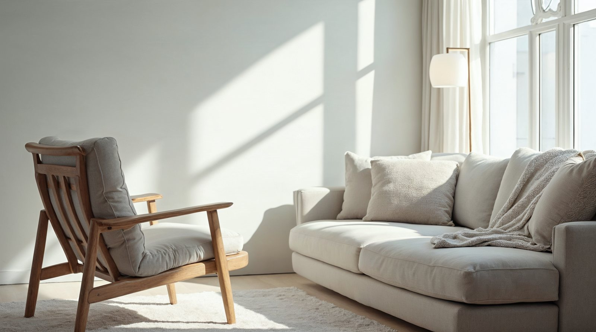
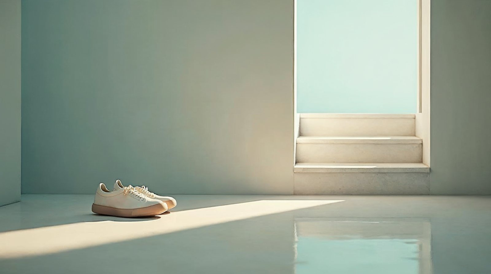
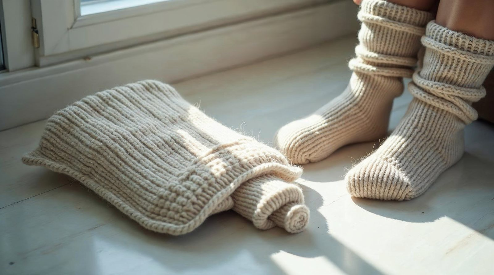
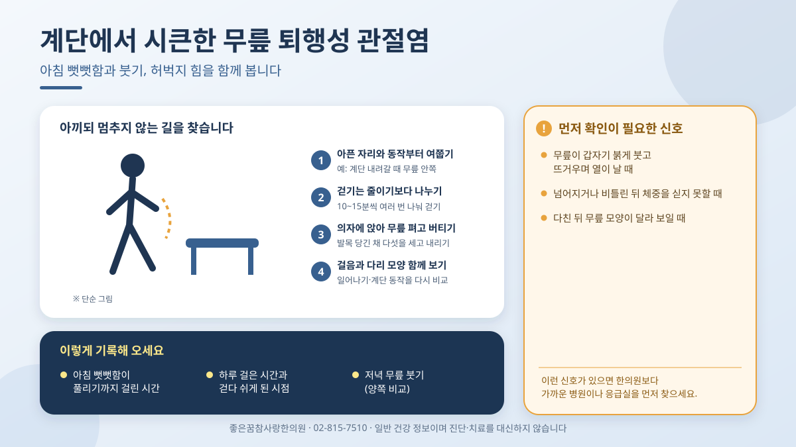

이종호 한의사 감수좋은꿈참사랑한의원 대표원장 (한의사 면허번호 19769)발행 2026-11-26 · 수정 2026-11-26
이 글의 차례
장바구니를 들고 상도동 언덕길을 오르다 무릎 안쪽이 시큰해 잠시 멈춰 섭니다. 지하철역 계단에서는 난간에 손이 먼저 갑니다. 저녁이 되면 무릎이 묵직하게 부어 있고, 아침에 일어나 첫걸음을 뗄 때는 관절이 녹슨 문처럼 뻑뻑합니다.
무릎 퇴행성 관절염은 무릎 연골이 얇아지고, 그 아래 뼈와 관절을 감싼 막, 주변 인대와 근육까지 함께 변하면서 통증과 뻣뻣함, 붓기가 생기는 상태입니다. 나이가 들며 흔해지지만, 무릎을 많이 쓰는 일을 오래 했거나 예전에 다친 적이 있으면 더 이른 나이에 시작되기도 합니다.
"연골이 닳았대요. 이제 쓰면 안 되는 거죠?" 진료실에서 이 말씀을 정말 자주 듣습니다. 엑스레이 사진 속 좁아진 틈을 보고 오신 날이면 표정이 유난히 어둡습니다. 아끼느라 걷기를 줄이고, 그러다 다리 힘이 빠지고, 다시 무릎이 더 불안해지는 고리 속에 계신 분이 많습니다.
저는 무릎을 '아껴 쓰는' 것과 '안 쓰는' 것은 다르다고 말씀드립니다. 닳은 무릎에도 할 수 있는 움직임이 있고, 무릎을 지켜 주는 허벅지와 엉덩이 근육은 나이가 들어도 꾸준히 쓰면 반응합니다. 그 길을 같이 찾아보려 합니다.
왜 무릎이 닳고 아플까요
무릎은 허벅지뼈와 정강이뼈가 만나는 관절입니다. 두 뼈 끝은 매끄러운 연골로 덮여 있고, 그 사이에 반달 모양의 연골판이 끼어 충격을 나눠 받습니다. 관절 전체는 얇은 막이 감싸고, 그 막에서 나오는 관절액이 기름처럼 움직임을 부드럽게 합니다.
수십 년 동안 걷고 서고 쪼그려 앉는 사이 연골은 조금씩 얇아집니다. 연골이 얇아지면 그 아래 뼈가 더 많은 힘을 받아 단단해지고 가장자리에 작은 뼈 돌기가 자랍니다. 관절을 감싼 막에 염증이 생기면 관절액이 늘어 무릎이 붓고, 붓기는 다시 무릎을 굽히기 어렵게 만듭니다.
연골 자체에는 신경이 거의 없어, 통증은 주로 연골 아래 뼈와 관절막, 주변 인대와 힘줄에서 옵니다. 그래서 사진에서 많이 닳아 보여도 덜 아픈 분이 있고, 사진은 비교적 괜찮은데 많이 아픈 분도 있습니다. 사진만으로 하루의 불편을 다 설명할 수 없는 이유입니다.
체중, 허벅지 근력, 다리 모양도 영향을 줍니다. 계단을 오르내릴 때 무릎은 몸무게의 몇 배에 이르는 힘을 받아, 몸무게가 조금만 늘어도 무릎 부담은 그보다 크게 늘어납니다.
허벅지 앞 근육이 약해지면 충격을 근육이 덜 받아 주니 관절이 그만큼 더 받습니다. O자 다리라면 무릎 안쪽이 먼저 닳기 쉽습니다.
한의학에서는 무릎이 붓고 무겁고 시린 모습을 오래전부터 비증(痺證)으로 살펴 왔습니다. 찬 기운과 습한 기운에 더 쑤시는지, 몸이 지치면 심해지는지를 함께 보는 것도 그래서입니다.
관절염의 무릎은 이런 모습을 보입니다
- 아침에 일어나거나 오래 앉았다 일어설 때 뻣뻣하다가, 몇 분에서 30분 안쪽으로 움직이면 풀린다
- 계단, 특히 내려갈 때와 쪼그려 앉았다 일어설 때 시큰하다
- 많이 걸은 날 저녁에 무릎이 붓고 묵직하다
- 무릎을 굽혔다 펼 때 '사각사각' 하는 소리나 걸리는 느낌이 있다
- 무릎을 끝까지 펴거나 끝까지 굽히기가 어려워진다
아침 뻣뻣함이 한 시간 넘게 이어지고, 양쪽 손가락이나 손목 같은 다른 관절까지 함께 붓는다면 류마티스 관절염 같은 다른 관절염도 확인해 봐야 합니다. 이런 경우에는 류마티스내과 진료를 먼저 권합니다.
무릎 앞, 안쪽, 바깥쪽
아픈 자리도 단서가 됩니다. 무릎 안쪽이 아프고 O자 다리라면 안쪽 관절이 먼저 닳은 경우를 생각합니다. 무릎 앞 슬개골 주변이 계단과 쪼그려 앉기에서 아프다면 무릎뼈와 허벅지뼈 사이의 부담을 봅니다.
무릎 바깥쪽이 달리기 뒤에 아프다면 관절보다 허벅지 바깥 힘줄 쪽을 먼저 떠올리기도 합니다. 그래서 "무릎이 아파요"보다 "계단 내려갈 때 무릎 안쪽이요"라고 말씀해 주시면 훨씬 빨리 좁혀집니다.

스스로 점검해 보세요
- 의자에서 팔을 쓰지 않고 일어날 수 있는지
- 계단을 한 칸씩 번갈아 내려갈 수 있는지, 한 발씩 모아 내려가게 되는지
- 저녁에 양쪽 무릎 둘레를 비교했을 때 아픈 쪽이 눈에 띄게 부어 있는지
- 바로 누워 무릎을 쭉 폈을 때 무릎 뒤가 바닥에 닿는지
- 하루 걷는 시간이 지난해보다 줄었는지
이 가운데 두세 개가 해당되고 몇 주째 이어진다면 진찰로 지금 상태를 한 번 정리해 두시길 권합니다. 계단이 유난히 불편하다면 계단을 내려갈 때 무릎이 아프면 한의원에서는 무엇을 먼저 묻나요?도 함께 읽어 보세요.
먼저 이렇게 여쭙니다
- 언제부터 아팠고, 다치거나 무리한 일이 있었나요?
- 계단을 오를 때와 내려갈 때 중 어느 쪽이 더 불편한가요?
- 아침 뻣뻣함은 몇 분쯤 가나요? 다른 관절도 붓나요?
- 무릎이 부을 때 뜨겁거나 붉어진 적이 있나요?
- 무릎이 갑자기 '걸려서' 펴지지 않거나 힘이 툭 빠진 적이 있나요?
- 하루에 얼마나 걷고, 쪼그려 앉는 일은 얼마나 하시나요?
- 병원에서 받은 사진 판독, 주사 치료, 드시는 진통제가 있나요?

진료실에서 함께 확인하는 것
서 있는 다리 모양과 걸음을 먼저 봅니다. 무릎이 안쪽으로 모이는지, 한쪽으로 체중을 덜 싣는지, 발이 바깥으로 벌어지는지를 살핍니다. 그다음 누운 자세에서 무릎이 끝까지 펴지는지, 얼마나 굽혀지는지 양쪽을 비교합니다.
무릎뼈 주변과 관절 안쪽·바깥쪽 선을 눌러 아픈 자리를 찾고, 관절에 물이 차 있는지 손으로 확인합니다. 허벅지 앞 근육의 힘과 굵기를 양쪽 비교하고, 엉덩이와 발목의 움직임도 함께 봅니다. 무릎이 고생하는 이유가 위아래 관절에 있는 경우도 많기 때문입니다.
물이 찬 정도나 주변 힘줄·인대의 모양을 볼 필요가 있다고 판단되면 초음파로 함께 확인합니다. 연골판이나 인대 손상이 의심되거나 영상 검사가 더 필요해 보이면 정형외과 진료를 먼저 안내합니다.
일상에서 먼저 해 볼 수 있는 것
- 걷기는 줄이기보다 나누기: 한 번에 오래 걷기 대신 10~15분씩 여러 번
- 의자에 앉아 무릎을 천천히 펴고 몇 초 버티기를 양쪽 번갈아 하기
- 쪼그려 앉기, 양반다리, 무릎 꿇기는 되도록 줄이고 낮은 의자 쓰기
- 계단은 오를 때 성한 다리 먼저, 내려갈 때 아픈 다리 먼저 내리기
- 붓고 뜨거운 날은 차갑게, 붓기 없이 뻣뻣한 날은 따뜻하게 찜질하기
- 쿠션 있는 신발 신기, 체중이 늘었다면 천천히 줄이는 계획 세우기
움직임 가운데 무릎에 부담이 적은 것은 실내 자전거와 물속 걷기입니다. 공원 걷기를 하신다면 내리막과 계단이 많은 길보다 평평한 길을 고르시고, 무릎이 시큰해지기 시작하는 시간을 알아 두었다가 그보다 조금 일찍 쉬어 주세요.
허벅지 앞 근육 운동은 무릎 관절염에서 가장 자주 권하는 운동 가운데 하나입니다. 의자에 앉아 발목을 몸 쪽으로 당긴 채 무릎을 쭉 펴고 다섯을 세고 내리는 동작이면 충분합니다. 아프지 않은 범위에서 하루 몇 번씩, 몇 주 꾸준히 하는 것이 요령입니다.
아프면 운동을 완전히 쉬어야 하느냐는 질문도 자주 받습니다. 붓고 뜨거운 시기에는 쉬는 것이 먼저지만, 그렇지 않다면 완전히 멈추기보다 강도와 종류를 조절해 이어 가는 쪽을 함께 고민합니다. 다음 날까지 붓기와 통증이 더 커지지 않는 정도가 그날의 적당한 양이라고 생각하시면 됩니다.
예를 들면 이런 경우입니다
실제 어느 분의 사연이 아니라, 진료실에서 자주 보는 모습을 바탕으로 그려 본 장면입니다.
예를 들어 김장이나 밭일처럼 오래 쪼그려 앉는 일을 한 다음 날 무릎이 붓고 굽혀지지 않는다면, 붓기가 가라앉을 때까지 쪼그려 앉기를 쉬고 낮은 의자를 쓰시라고 말씀드립니다. 다음번에는 중간중간 일어나 무릎을 펴 주는 시간을 정해 둡니다.
무릎이 아파 산책을 끊은 지 몇 달 되신 분이라면, 무릎보다 허벅지 근육이 먼저 눈에 띄게 줄어 있는 경우가 많습니다. 이럴 때는 걷기를 바로 늘리기보다 의자에 앉아 무릎 펴기부터 시작해, 몇 주에 걸쳐 걷는 시간을 조금씩 되찾아 갑니다.
언덕과 계단이 많은 동네에서 무릎 쓰는 법
상도동처럼 언덕과 계단이 많은 동네에서는 무릎 이야기가 유난히 자주 나옵니다. 평지에서는 괜찮은데 내리막만 가면 시큰하다는 분이 많습니다. 내려갈 때는 허벅지 앞 근육이 몸무게를 버티며 브레이크를 거는데, 이때 무릎뼈 뒤가 큰 힘을 받기 때문입니다.
가파른 내리막은 보폭을 줄이고, 길이 넓다면 살짝 지그재그로 내려가 보세요. 그만큼 경사가 조금 완만해지는 셈입니다. 지팡이를 쓰신다면 아픈 무릎의 반대쪽 손에 쥐는 것이 일반적입니다. 장바구니는 한쪽에 몰아 들기보다 양손에 나누거나 바퀴 달린 가방을 쓰시면 무릎 부담이 덜합니다.
지하철역 계단에서는 난간을 잡는 것을 부끄러워하지 마세요. 난간을 잡으면 무릎이 받는 힘을 팔이 조금 나눠 가집니다. 엘리베이터나 에스컬레이터가 있다면 아픈 날에는 그쪽을 쓰시고, 그만큼 평지 걷기로 채우시면 됩니다.

한의원에서 함께 살필 수 있는 경우
- 계단과 쪼그려 앉기에서 무릎이 시큰하고 저녁마다 붓는 경우
- 무릎이 아파 걷기를 줄였더니 다리 힘이 빠지고 더 불안해진 경우
- 날씨가 궂거나 피곤한 날 무릎이 더 쑤시고 시린 경우
- 병원 진료와 함께 남은 일상의 불편을 살피고 싶은 경우
좋은꿈참사랑한의원에 처음 오시면 모든 분께 그렇듯 맥부터 짚으며 언제부터 어떻게 아팠는지 여쭙습니다. 그다음 걸음과 다리 모양, 무릎이 펴지고 굽혀지는 범위, 아픈 자리와 붓기를 확인합니다.
진찰 뒤에는 침과 약침, 온열 치료 같은 물리치료, 무릎 주변 힘줄 문제가 함께 보일 때 상의하는 체외충격파, 골반과 발목 정렬을 함께 보는 추나 가운데 지금 상태에 맞는 방법을 고릅니다. 많이 붓고 뜨거운 날과 뻣뻣하기만 한 날은 고르는 방법이 다를 수 있어, 그날의 무릎을 보고 정하고 이유를 설명해 드립니다.
몸이 차고 무릎이 시린 분, 잠이 얕아 통증을 더 크게 느끼는 분께는 맥과 몸 상태를 보고 한약 상담을 함께 하기도 합니다. 혈압약이나 혈액을 묽게 하는 약을 드시고 계시다면 모두 알려 주세요. 약침이나 한약을 정할 때 함께 고려합니다.
집에서 할 허벅지 운동과 계단 쓰는 법도 함께 정하고, 다음에는 그 사이 걸은 시간과 붓기를 보며 계획을 조정합니다.
이렇게 기록해 오시면 상담이 쉬워집니다
- 아침 뻣뻣함이 풀리기까지 걸린 시간
- 하루 걸은 시간이나 걸음 수, 걷다 쉬게 된 시점
- 저녁 무릎 붓기(양쪽 비교, 눈으로 보아도 되고 줄자로 재도 됨)
- 가장 불편한 동작(계단 내려가기, 일어서기, 쪼그려 앉기 등)
- 무릎이 걸리거나 힘이 빠진 날이 있었다면 그때 상황
- 병원 사진 판독지, 주사 치료 이력, 드시는 약 이름
무릎이 아프면 갈 수 있는 곳이 하나둘 줄어듭니다. 그래도 오늘 이 글을 끝까지 읽어 주신 것처럼, 할 수 있는 일은 아직 많습니다. 아끼되 멈추지 않는 길을 같이 찾겠습니다. 다음에 오시면 지난주 가장 멀리 걸은 날이 언제였는지부터 여쭙겠습니다.
이런 증상은 먼저 확인이 필요합니다
- 무릎이 갑자기 붉고 뜨겁게 붓거나 열이 나는 경우, 한쪽 종아리까지 붓고 아픈 경우
- 넘어지거나 비틀린 뒤 체중을 싣지 못하거나 무릎 모양이 달라 보이는 경우
이런 신호가 있으면 한의원보다 가까운 병원이나 응급실을 먼저 찾으세요.
함께 읽으면 좋은 글
- 무릎 관절이 닳았다는 말을 들었을 때 계단과 걷기는 어떻게 하나요?
- 무릎에 물이 찬 것 같을 때는 어떤 점을 살펴보나요?
- 계단을 내려갈 때 무릎이 아프면 한의원에서는 무엇을 먼저 묻나요?
- 무릎이 아프면 운동을 완전히 쉬어야 할까요?
- 한파가 오면 무릎과 손가락 관절이 시리고 뻣뻣한 것은 왜 그런가요?

여쭙는 것
- 언제부터 아팠고, 다치거나 무리한 일이 있었나요?
- 계단을 오를 때와 내려갈 때 중 어느 쪽이 더 불편한가요?
- 아침 뻣뻣함은 몇 분쯤 가나요? 다른 관절도 붓나요?
생활에서 해 볼 것
- 걷기는 줄이기보다 나누기: 한 번에 오래 걷기 대신 10~15분씩 여러 번
- 의자에 앉아 무릎을 천천히 펴고 몇 초 버티기를 양쪽 번갈아 하기
- 쪼그려 앉기, 양반다리, 무릎 꿇기는 되도록 줄이고 낮은 의자 쓰기
한의원에서 함께 살필 것
- 계단과 쪼그려 앉기에서 무릎이 시큰하고 저녁마다 붓는 경우
- 무릎이 아파 걷기를 줄였더니 다리 힘이 빠지고 더 불안해진 경우
- 날씨가 궂거나 피곤한 날 무릎이 더 쑤시고 시린 경우
먼저 확인이 필요한 신호
- 무릎이 갑자기 붉고 뜨겁게 붓거나 열이 나는 경우, 한쪽 종아리까지 붓고 아픈 경우
- 넘어지거나 비틀린 뒤 체중을 싣지 못하거나 무릎 모양이 달라 보이는 경우
한눈에 보는 표
| 구분 | 핵심 |
|---|---|
| 여쭙는 것 | 언제부터 아팠고, 다치거나 무리한 일이 있었나요? 계단을 오를 때와 내려갈 때 중 어느 쪽이 더 불편한가요? |
| 생활에서 해 볼 것 | 걷기는 줄이기보다 나누기: 한 번에 오래 걷기 대신 10~15분씩 여러 번 의자에 앉아 무릎을 천천히 펴고 몇 초 버티기를 양쪽 번갈아 하기 |
| 한의원에서 함께 살필 것 | 계단과 쪼그려 앉기에서 무릎이 시큰하고 저녁마다 붓는 경우 무릎이 아파 걷기를 줄였더니 다리 힘이 빠지고 더 불안해진 경우 |
| 먼저 확인이 필요한 신호 | 무릎이 갑자기 붉고 뜨겁게 붓거나 열이 나는 경우, 한쪽 종아리까지 붓고 아픈 경우 넘어지거나 비틀린 뒤 체중을 싣지 못하거나 무릎 모양이 달라 보이는 경우 |
자주 묻는 질문
연골이 닳았다고 하면 걷기를 그만둬야 하나요?
걷기를 그만두면 허벅지 근육이 줄어 무릎이 더 불안해질 수 있습니다. 한 번에 오래 걷기보다 짧게 나누어 걷고, 다음 날 붓기와 통증이 더 커지지 않는 양을 찾는 쪽을 권합니다.
무릎에서 소리가 나면 관절염인가요?
아프지 않은 소리는 흔하고 그것만으로 관절염이라고 하지는 않습니다. 소리와 함께 통증, 붓기, 걸리는 느낌이 있다면 진찰로 확인해 보세요.
찜질은 차갑게 하나요, 따뜻하게 하나요?
붓고 뜨거운 날은 차갑게, 붓기 없이 뻣뻣하고 시린 날은 따뜻하게 하는 것이 일반적인 기준입니다. 어느 쪽이 편한지 기록해 오시면 진료 때 함께 정합니다.
무릎 주사를 맞고 있는데 한의원 진료를 같이 받아도 되나요?
맞은 주사의 종류와 날짜를 알려 주시면 겹치지 않게 시기와 방법을 정합니다.
무릎 보호대는 계속 차고 있어도 되나요?
오래 걷거나 계단이 많은 날처럼 필요한 때에 쓰는 것은 도움이 될 수 있습니다. 하루 종일 차고 있으면 근육을 덜 쓰게 될 수 있어 쓰는 시간은 진찰 뒤 상의해 정합니다.
좋은꿈참사랑한의원은 재진 때 지난번 이야기부터 이어서 여쭙니다. 진료시간과 예약은 오시는 길에서 확인하세요.
어디서 상담받을 수 있나요?
좋은꿈참사랑한의원은 서울 동작구 만양로2길 2 신성빌딩 3층·5층(서울 동작구 상도동, 7호선 상도역 3번 출구 근처)에 있습니다. 한의사 3명(이종호 대표원장, 조영기 수석진료원장, 정원영 진료원장)이 진료합니다. 진료시간은 평일 09:30~20:00(점심 13:00~14:00), 토·일·공휴일 09:30~15:00이며, 방문 전 전화로 확인을 권합니다. 예약은 네이버 예약, 카카오톡 상담, 전화 02-815-7510로 받습니다.
이 글은 일반적인 건강 정보이며 개인의 진단이나 치료를 대신하지 않습니다. 증상이 있거나 복용 중인 약이 있다면 진료를 통해 확인하세요. 치료 효과는 개인마다 다를 수 있습니다.
작성 기준: 일반적으로 알려져 있는 건강 정보를 참고해 정리했습니다(대표원장 감수). 증상 기록은 1~2주 동안 하루 1회, 비슷한 시간에 적어 오시면 지난 상태와 비교하기 쉽습니다.